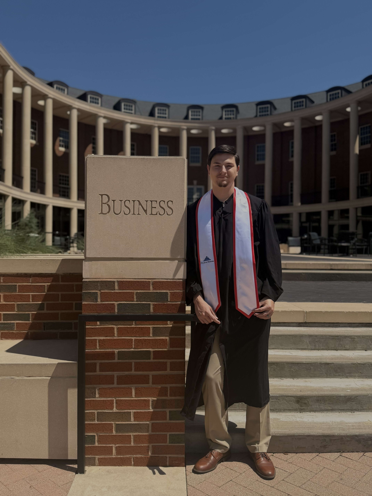
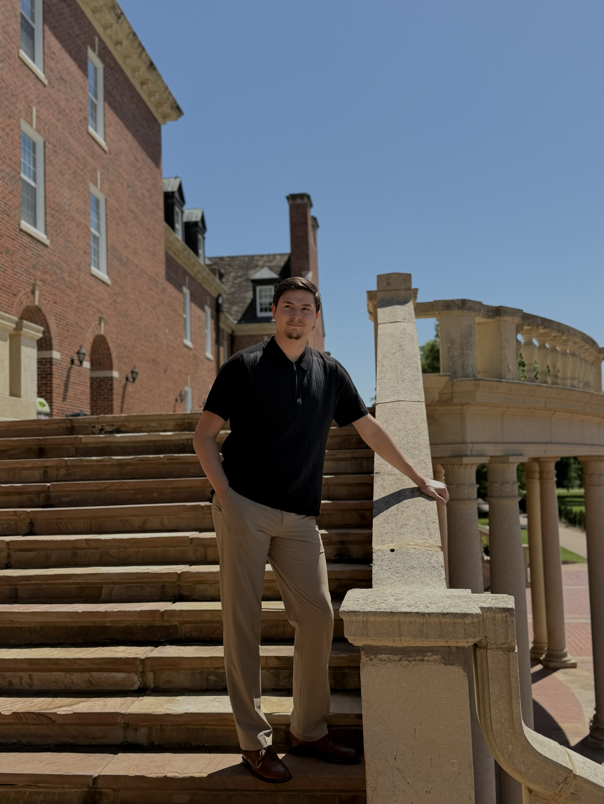

I'm a Management Information Systems graduate from Oklahoma State University with a 3.7 GPA, based in Owasso, Oklahoma. I'm passionate about IT infrastructure, networking, and building systems that actually work reliably.
I don't just study technology — I run it. This website is hosted on a self-managed Ubuntu server in my home, secured, automated, and maintained by me.


Growing up I was always the person friends and family called when something wasn't working. That curiosity led me to pursue a degree in Management Information Systems at Oklahoma State University, where I graduated in May 2026.
Throughout my studies I didn't just focus on theory — I built real things. Enterprise network labs, web applications, project management systems. I learned how networks actually function, how servers are administered, and how to keep systems secure and running.
Outside of class I went further — setting up this entire website on home hardware, configuring Linux servers, Cloudflare tunnels, automated deploys, and proper security hardening. It's the kind of experience you can't get from a textbook.
I'm actively looking for my first IT role. Let's talk.